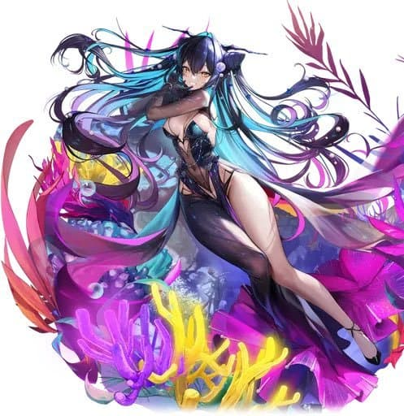
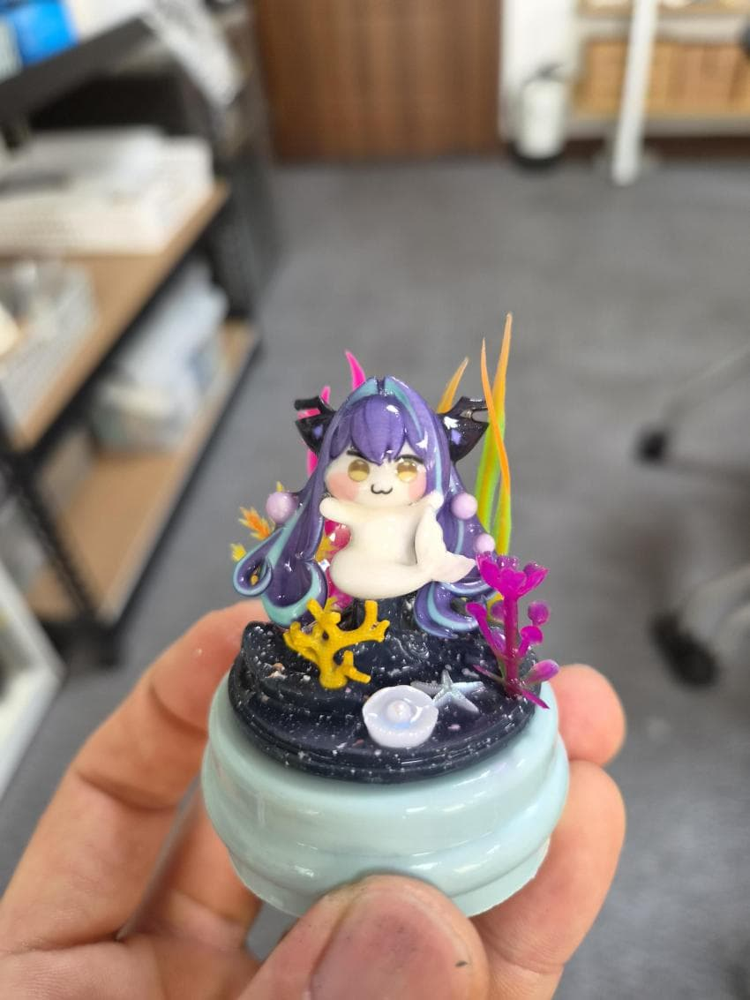

안녕하세요
세로롱 워터볼을 만들어봤습니다
디오라마를 일러스트랑 비슷하게 구현해보려고 최대한 노력했는데
생각보다 느낌이 잘 살아난 것 같아서 뿌듯하네요 ㅎㅎ
원래 피규어도 만들고 이것저것 작업 중인데
아는 동생이 세이렌으로 워터볼 만들어보세요!라고 해서 곰곰이 고민해보니까
세이렌이 스스로 워터볼 속에 있는데 이거 그냥 워터볼 그 자체 아님??
컨셉 완벽하다 싶어서 바로 만들었습니다 ㅋㅋㅋㅋ
그리고 저 원래 만들면 항상 2개씩 제작해서 하나는 나눔하고 있는데요
이번에도 X에 나눔 글 올려뒀습니다!
관심 있으신 분들은 @ODD_figurium 참고해주세요


최대한 디오라마 구현해봄..
기포가 은근 많이 들어가서 물속에서 작업해요
완성!
감사합니다